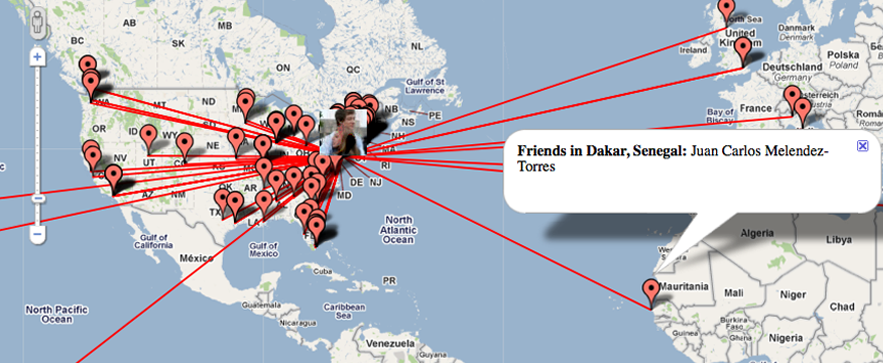

Maps of Your Friends Around the World | Where My Friends Be?
where my friends be?
See and share an animated map of all your facebook friends!
Share
Tweet

Go to your map
because your sprawling global network of friends makes you more worldly, right?
and
have said:
"The enthusiasm of these frosh is infectious. Future Zuckerbergs?"
If you like what you see, you should click to
sign up for future updates
from our team. We won't disappoint.
 have said: "The enthusiasm of these frosh is infectious. Future Zuckerbergs?"
have said: "The enthusiasm of these frosh is infectious. Future Zuckerbergs?"